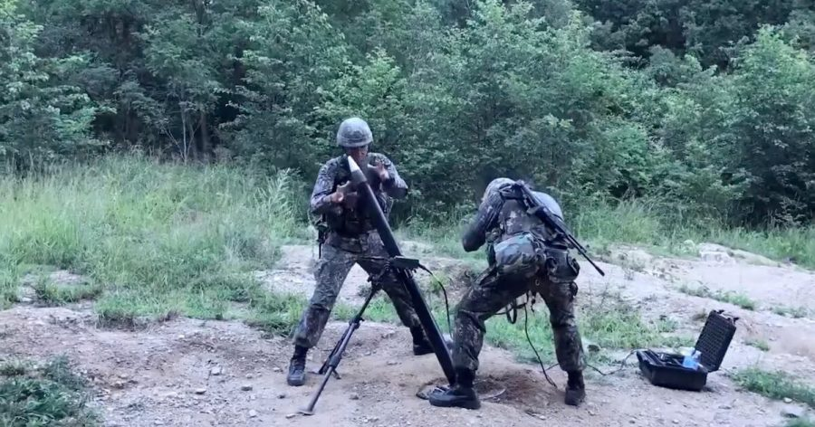

တောင်ကိုရီးယား တပ်မတော်အတွက် တောင်ကိုးရီးယား ပြည်တွင်းမှာ ထုတ်လုပ်တဲ့ မျိုးဆက်သစ် မော်တာတွေ စတင်တပ်ဆင်နေပြီ ဖြစ်ပါတယ်။
အခုလက်နက်တွေဟာ ဒုတိယ မျိုးဆက်သစ် ၈၁မမ (စိန်ပြောင်း) မော်တာတွေ ဖြစ်ပြီး ဟွန်ဒိုင်းကုမ္ပဏီမှ ထုတ်လုပ်ထားခြင်း ဖြစ်ပါတယ်။ ဒီ ဒုတိယ မျိုးဆက်သစ် မော်တာတွေကို ၂၀၂၁ ခုနှစ် ဇွန်လမှ စတင်ပြီး ထုတ်လုပ်တာ ဖြစ်ပါတယ်။
အခု ဒုတိယ မျိုးဆက်သစ် မော်တာတွေကို ၂၀၁၄ ခုနှစ်ကတဲက စတင်စမ်းသပ် တီထွင်ခဲ့ပြီး ၂၀၁၉ ခုနှစ်ထဲမှာ စတင်ပြီး ပစ်ခတ်စမ်းသပ်မှုတွေ ပြုလုပ်နိုင်ခဲ့ပါတယ်။ ဒီမော်တာကို 81 mm Mortar-II လို့ အမည်ပေး ထားပါတယ်။
ဒီမော်တာဟာ ပထမ မျိုးဆက် မော်တာတွေထက် ၂၀% ပိုမိုပေါ့ပါးပါတယ်။ ပစ်ခတ်ဖို့လဲ အဖွဲ့သား ၄ ယောက်ပဲ လိုအပ်ပါတယ်။ (သာမန်မော်တာတွေက ၅ ယောက်လိုပါတယ်။)
ဒီအဆင့်မြင့် မျိုးဆက်သစ် မော်တာ စနစ်ရဲ့ ထူးခြားချက်ကတော့ လေဆာ အကွာအဝေးတိုင်း ကိရိယာနဲ့ GPS တွေနဲ့ ချိတ်ဆက်ထားတာပဲ ဖြစ်ပါတယ်။
ဒီ လေဆာ အကွာအဝေးတိုင်း မှန်ပြောင်းနဲ့ GPS တွေအကူအညီနဲ့ ပစ်မှတ်ရဲ့ တည်နေရာနဲ့ အကွာအဝေးကို အလွယ်တကူ တိကျစွာ ရှာဖွပေးနိုင်မှာ ဖြစ်သလို လိုအပ်တဲ့ ချိန်တွယ်မှုတွေကိုလဲ မြန်ဆန်တိကျစွာ ဆောင်ရွက်နိုင်မှာ ဖြစ်ပါတယ်။ ရလဒ်ကတော့ ပစ်မှတ်တွေကို ပိုမိုမြန်ဆန်စွာ ပစ်ခတ်နိုင်မှာ ဖြစ်သလို ပိုလဲ တိကျစွာ ပစ်ခတ်နိုင်မှာ ဖြစ်ပါတယ်။
မော်တာရဲ့ ကွန်ပြူတာက ရရှိတဲ့ အချက်အလက်တွေအရ မော်တာပြောင်းကို အလိုအလျောက် ချိန်ရွယ်ပေးပါတယ်။ ဒါ့ကြောင့် ပြစ်မှတ်ကို ရှောတွေ့ချိန်ကနေ အချိန်တို အတွင်းမှာ တိကျတဲ့ ပစ်ခတ်မှုတွေကို လုပ်ဆောင်နိုင်စွမ်း ရှိတာဖြစ်ပါတယ်။
ဒါ့အပြင် မော်တာမှာ တပ်ဆင်တဲ့ ချိန်တွယ်မှန်ပြောင်း နေရာမှာလဲ လေဆာချိန်ခွက်နဲ့ အစားထိုးထားပါတယ်။ ဒါ့ကြောင့် ကွန်ပြူတာ ပျက်သွားခဲ့ရင်တောင် ပစ်မှတ်ကို လျင်မြန်တိကျစွာ ဆက်လက်ပစ်ခတ် သွားနိုင်မှာ ဖြစ်ပါတယ်။
Reference: Janes Defense Weekly
တောင်ကိုရီးယား တပ်မတော်ရဲ့ ၈၁ မမ မော်တာအသစ်

February 24, 2022
Other Posts
- မစ်ကီးဝေး ဂလက်ဆီရဲ့ အလယ်မှာ ဘာရှိလဲ
- မစ်ကီးဝေး ဗဟိုနားမှာ အရက်ပြန် ရှာတွေ့
- သင့်ကလေးကို ဘယ်လိုစာဖတ်ပြမလဲ
- အလွန်ရှားပါးတဲ့ ၃ မွှာပူး ကြယ်အဖွဲ့အစည်း ရှာတွေ့
- မစ်ချလင်တာယာကုမ္ပဏီက လေမဲ့တာယာ ထုတ်ဖော်ပြသ
- တရုတ်ထက် ဦးအောင် လပေါ်မှာ သတ္တုတူးဖို့ နာဆာ ကြိုးပမ်းနေ
- အလင်းအလျှင်ထက် မြန်အောင်သွားမယ့် Warp Drive
- စကြာဝဠာဟာ black hole တွင်းနက်တစ်ခုအတွင်းမှာ တည်ရှိနေတာလား
- စိတ်ဖြင့် ထိန်းချုပ်ပြီး အောက်ပိုင်းသေသူ လမ်းလျှောက်နိုင်စေသောစက် တီထွင်အောင်မြင်
- လွန်ခဲ့တဲ့ နှစ်သန်း ၃၀၀ တုန်းက ကမ္ဘာ့မြေပုံ